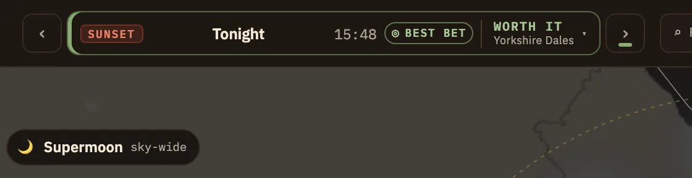
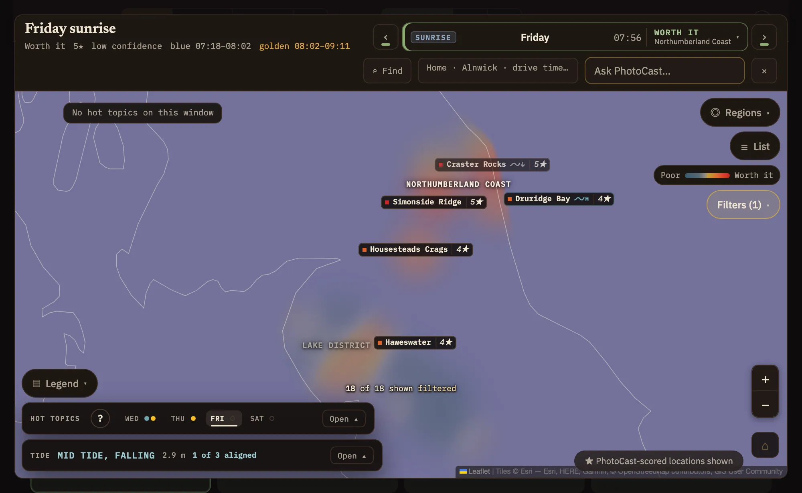
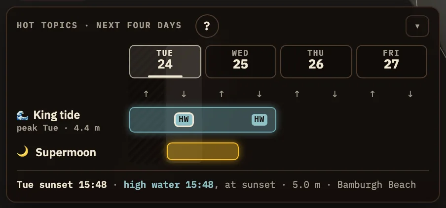
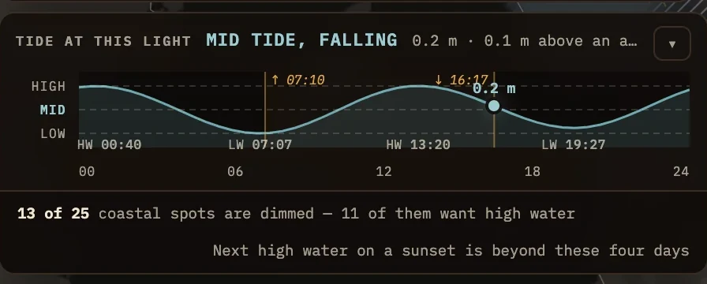
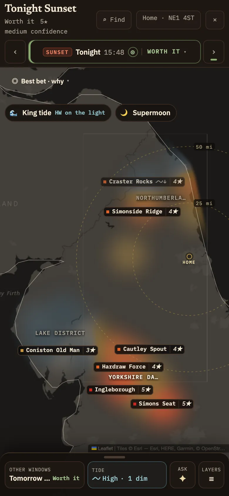
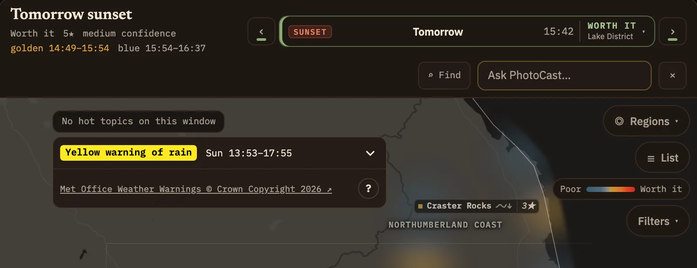
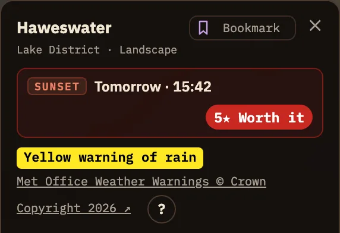

Map.
The map shows one sunrise or sunset at a time, painted across the region in the forecast colours. It opens full screen over the forecast screen when you tap a card, so you can see where within the region the light looks best, or find somewhere new along a stretch of coast or a valley.
Opening and closing the map
The map is a full-screen view over the forecast screen. There is no Map button: you open it from the thing you want to look at.
- A sunrise or sunset card or an event lane in This week opens the map on that sunrise or sunset. A card, a lane or a Your places chip also frames your home and the card's best place together (when you have a home set) and opens that place's callout.
- A chip in Your places opens the map on that place's best sunrise or sunset, or on a watched date's morning.
- A day button on a Further ahead entry opens the map on that day.
- ⌕ Find opens it when you pick a sunrise or sunset. More on Find.
- Show on map → in a place or area sheet, and Show on map › in an Ask PhotoCast answer, open it on that place.
- The aurora banner opens it on tonight's aurora night.
To close it, press ✕ at the top right, press Escape, or use your browser's Back button. Back and Escape close whatever is on top first, such as a sheet or a menu, and the map last. Closing returns you to the card or lane you opened it from.
The map's address
The map has its own web address in the form #map/2026-12-03/sunrise (a date, then sunrise, sunset, night or aurora, and sometimes a place). Bookmark it, or send it, and PhotoCast opens the map on that sunrise or sunset after you sign in. If that sunrise or sunset has passed, or isn't forecast yet, the map opens with a short note saying so. The address never carries your home, your drive time or your filters.
An area or region focus that Find gives you is not part of the address, so a refresh keeps the sunrise or sunset but not the area. A place whose callout is open is kept.
Choosing a sunrise, sunset or night
The header names the sunrise or sunset you're looking at in a title, with its verdict, best rating and confidence beside it. Next to it, the control names the sunrise or sunset, such as SUNSET Friday 16:17, with the verdict, how many locations were rated, and the regions that look best. ◎ BEST BET marks the one sunrise or sunset PhotoCast recommends most across the days ahead. Use ‹ and › to step through the days, or tap the middle to choose from the full list. The left and right arrow keys step too, while focus is in the header.
ProWhen the selected sunrise or sunset has a Best bet, a ◎ Best bet · why button sits under the control. Press it to read the short reason PhotoCast gives for the pick, with its region. A second option reads ○ Also good · why. The button is not shown when there is no pick for the sunrise or sunset you are on.
Under it, a chip names any hot topics (notable photographic conditions and events) for the selected sunrise or sunset, such as Mist · 2 places, or says No hot topics on this window. When the selected sunrise or sunset is poor and a nearby one is better, the control says so, for example Tomorrow sunset is better ›. Tap it to switch.
A small note above the map can say what a card carried across, such as Carrying 4★+ · within 1h 30, with a Clear button that puts those filters back to the map's own.

123456789- 1Previous. Steps back to the sunrise or sunset before this one.
- 2Sunrise, sunset or night. SUNRISE or SUNSET, or an aurora night when one is forecast.
- 3Day and time. The day, and the time of sunrise or sunset at home.
- 4Best bet. Shown on the sunrise or sunset PhotoCast recommends most in the days ahead. The Best bet region is also shown in that region's panel.
- 5Verdict. The verdict for the selected sunrise or sunset. The title at the left of the header repeats it with the best rating and the confidence.
- 6Where's best. The region that looks most promising.
- 7Full list. Tap the middle of the control, or the ▾, to choose any sunrise or sunset from a list.
- 8Next. Steps on to the next sunrise or sunset.
- 9Hot topics for this sunrise or sunset. Names any hot topics for the selected sunrise or sunset. When it is poor, a Tomorrow sunset is better › suggestion can appear here too.

Colour and zooming in
Zoomed out, the colour gives you the broad picture region by region, from Poor to Worth it on the key at the top right. As you zoom in it gives way to individual locations. Each is shown as a chip, a location marker showing its name and rating. What the colours and hatching mean.
A line on the map counts what you're seeing, such as "57 of 266 shown · 52 rated · 84 stood down". Filters and the area in view change the first number.
To move around quickly, use ◎ Regions ▾. The regions are listed best first for the sunrise or sunset you are on, each with how many of its locations are rated 4★ or better. Regions that are too thinly rated to judge come after the rest, and are never marked poor for it. On a night there is no regional verdict, so that list keeps its usual order. Choose a region to see it on its own, ranked, then go back to every region for this sunrise or sunset. The ⌂ button at the bottom right brings the map back to your home area.
For every place in one go, press ☰ List beside ◎ Regions. It lists the places for the sunrise or sunset you are on, best first, using the same drive time and rating filters as the map. Choose a row to close the list and open that place's callout. The button is greyed, with the reason given, when there is no list to show: a past sunrise or sunset, a night, high water, or a day with no forecast.
Locations and the callout
Tap a location marker for its callout, a summary of that place for the sunrise or sunset you're on: its rating, the drive time, a Leave by time, how dark the sky is, and the tide if it's on the coast. If a Met Office weather warning covers the location, a chip on the callout gives its level and type. Open it for the full forecast over the coming days. From here you can also choose Plan from here to plan from that area for a while. More on planning from elsewhere.
Show in This week in the callout closes the map and opens that place's next-days sheet on the forecast screen, which is the way back to the days around a place you have found on the map. It is not offered on a sunrise or sunset that has passed.
ProDrive and leave-by times, Red Sky and Golden Hour scores and the tide at the light are available with Pro.
How was it?Pro
Step back to a sunrise or sunset that has already happened and open a place's callout. Once that place's sunrise or sunset has passed, a How was it? block appears in the callout. Tap one to five stars to rate how the sky turned out, or press Didn't see it if you weren't there. Your rating shows as You rated with a Change button, so you can correct it later.
- It is your own record, and PhotoCast never says the forecast was right or wrong from it.
- If a rating can't be saved the block says so, Not saved. Tap a star again., and nothing changes.
- It appears only for places forecast for that sunrise or sunset, not for wildlife hides.
ProRating a past sunrise or sunset is available with Pro. On Lite the block reads Rating is part of Pro.
Finding a place
Choose ⌕ Find in the map's header, or press ⌘K (Ctrl K on Windows and Linux). With the map open:
- A place flies the map to it and opens its callout, on the sunrise or sunset you were already looking at. If one of your filters would hide it, only that filter is relaxed for the moment and a line says which. Your saved star filter is never overwritten.
- An area flies there and shows only that area's spots, with a Showing … · clear chip to lift it.
- A region pans and frames the map on it. It never moves your origin.
- A window selects that sunrise or sunset.
Nothing opens a sheet over the map or leaves it: the map stays where it is. More on Finding places.
ProWith Pro you can bookmark a place or an area from its callout. Bookmarked places get a bookmark mark beside their name on the map, and the ◎ Regions list gains My places and an entry for each bookmarked area. A bookmark never changes a rating or a Best pick. More on your places.
Filters
Filters ▾ opens the filter panel. The number beside it tells you how many filters are on.
- Minimum rating
- Show only locations at or above a star rating.
- Subject
- Landscape, Wildlife, Seascape, Woodland and Waterfall. Choose one or several.
- Bluebell Pro
- Appears in season, for woods known for bluebells.
- Drive time Pro
- Any, 45 min, 1h 30 or 2h 30 of road drive time from home.
- Sky
- 🔭 Dark sky only shows locations with little light pollution, which suits aurora, astrophotography (photographing the night sky) and stargazing.
- Scope
- My area covers regions within about three hours' drive of your home (regions without a measured drive time are included), and Everywhere covers all of them. When you're planning from somewhere else it reads Around and the place name. Scope moves the map and decides which locations the verdict considers; it doesn't hide locations. Lite readers with sub-regions also get Your sub-regions and Everywhere, which only moves the map. Appears once you've set a home postcode.
The bottom of the panel shows how many locations are left, such as "18 of 64 shown", with Clear all to start again.
Hot topics panel
The Hot topics panel sits at the bottom left and starts closed. Open it with ▴ to see the next four days, each split into sunrise ↑ and sunset ↓. Each topic gets a row, with a bar across the sunrises and sunsets it covers. The day you're looking at is outlined.

Tide panelPro
When the map shows any coast, a Tide panel appears at the bottom left. It answers the coastal question a sky forecast can't: will the water be where you want it at sunrise or sunset?
The tide curve
Open the panel to see the whole day's tide, from midnight to midnight. There's a lot in it, so here it is piece by piece, using Friday's 16:17 sunset.

123456789- 1The answer in words. The state of the tide at sunrise or sunset and whether the water level is rising or falling (MID TIDE, FALLING), then the height and how it compares with an average tide. If you read nothing else, read this.
- 2High, mid and low. Faint dashed lines across the chart mark high, mid and low water. The level that sunrise or sunset falls in is highlighted.
- 3The tide through the day. The curve rises and falls twice a day, and the shaded area shows the predicted tide height. Night is shaded darker.
- 4Sunrise and sunset. Gold lines with their times, ↑ 07:10 and ↓ 16:17.
- 5High and low water. The times of each turn of the tide, such as HW 13:20 and LW 19:27.
- 6The tide at sunrise or sunset. The bright dot is the predicted water level at that moment, with its height. Here it's 0.2 m, halfway down a falling tide, where the water level is decreasing.
- 7What it means for the coast. How many coastal locations in view are dimmed because the predicted tide doesn't match their preferred tide level, and which level most of them prefer.
- 8When it gets better. A jump to the next sunrise or sunset that matches those locations' preferred tide level. If there isn't one in the next four days, it says so.
- 9Close. Folds the panel back to a single line.
The quickest way to use it: read line 1, then look at where the dot sits against the gold line. If it's at the top or bottom of the curve, high or low water coincides with the selected sunrise or sunset.
Matching locations to the tide
Each coastal location has a preferred tide level: high, mid or low. Where the predicted tide at sunrise or sunset suits a location, its marker carries a small wave with a letter for the level it prefers, such as ∿M. Where it doesn't, the marker is dimmed and its wave has an arrow: up if the location needs the water level to be higher and down if it needs it lower. A dimmed location may still have promising light, but the predicted tide does not match its preferred tide level. Dimming only changes how the marker is drawn. The star rating itself already takes the tide into account for everyone: it is lowered when the tide doesn't suit the location and can rise by at most one star when it suits it well, especially on a spring or king tide.
Closed, the panel is one line, such as TIDE · MID TIDE, FALLING · 0.2 m at 16:17 · 13 dimmed. Open, the footer explains the count ("13 of 25 coastal spots are dimmed — 11 of them want high water") and can jump to the next sunrise or sunset that matches their preferred tide level. If there isn't one in the next four days, it says so.
Lite still lists spring and king tides in Further ahead and as lanes in This week.
Legend and reach rings
▤ Legend ▾, at the bottom left on a computer, explains the colour scale, the hatching, the zoom stage and any extra markings on the current map. With a home postcode set, it also has a Reach rings switch. The rings are simple circles 25 and 50 miles from home, not calculated drive-time areas. Once drive times exist they are labelled roughly 45 min and 1h 30 as a guide; otherwise they read 25 mi and 50 mi. Anyone with a home set sees them, and they start switched on.
Aurora and astro nights
When the northern lights are possible, aurora nights appear in the list of sunrises and sunsets. Choose one and the map switches to aurora colours, with a line showing roughly how far south the aurora may be visible. Astro nights, which rate dark-sky locations for photographing the night sky, appear in the same list.
The Aurora and night sky guide covers both, along with aurora alerts and dark-sky ratings.
ProAurora forecasts and viewing information are available with Pro.
Big seas and stand-downs
On rough days, piers and lighthouses where waves are expected to break at high water get a lightning-bolt chip. It's ringed when high water falls at sunrise or sunset. When the weather rules an area out, it's covered by a darker veil with hatching and the cause is named. A fainter hatch means places not yet rated. More on hatching.
On a phone
The map fills the whole screen on a phone, with the same header: the title, the window control, ⌕ Find and ✕.
- Filters open from the bottom of the screen.
- Tap a location for a summary panel at the bottom of the screen, and drag it up for more.
- The List is a row in that panel, See all and a count of spots, and it opens from the bottom of the screen. A row closes it and opens that place.
- A warning's full text opens from the bottom of the screen too.
- Your phone's Back gesture or button closes the layer on top first, such as a sheet, and the map last.

Weather warnings
When the Met Office has a weather warning in force for the sunrise or sunset you are looking at, a row of chips appears at the top left, under the topic chips. Each chip gives the warning's level as a word and its weather type, with Updated if the Met Office has issued a newer version, and links to the Met Office's warnings page. Beside each chip, Details opens the full warning in place, under the controls (from the bottom of the screen on a phone), and Hide closes it.
- The full warning gives the Met Office's own words: the headline, what to expect, what to do, when it is valid and how many places in each area it covers, with the likelihood and impact matrix. The Met Office credit shows whether it is open or closed.
- The chips follow the window control. They appear for a sunrise or sunset and not for a night, high-water or past window.
- The map card for a location also carries a chip when a warning covers that location.
- The map draws no warning outlines or shading, and a warning never changes a star rating, a verdict or the colours on the map.


If PhotoCast has not been able to check the Met Office lately, the row says when it last did and that what you see may be out of date. The lack of a chip is never an all-clear, so check the Met Office before you travel.
Tips
- Open a card or a lane in This week and the map opens on that sunrise or sunset, with your drive time and rating filter carried over. Choosing a sunrise or sunset in Find lands here too. ✕ and your browser's Back button take you back to where you were.
- On the coast, open the Tide panel first. A dimmed 4★ headland usually means the tide doesn't suit it at this sunrise or sunset, not that the location is a poor choice.
- Zoom in before deciding. One 5★ location can hide inside an area that looks average from a distance.